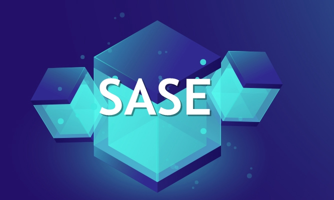

SASE解决方案
云服务和网络正在推动数字业务的概念，但是传统的网络和网络安全架构远远不能满足数字业务的需求。
Gartner的“ 网络安全的未来在云端 ”报告阐明了在新的网络和安全模型的基础上进行云网络和安全转型的潜力，该模型称为安全访问服务边缘（SASE）。

随着企业纷纷拥抱数字业务过程，以及边缘计算、云服务和混合网络的兴起，传统网络和安全架构开始多方崩塌的迹象越来越明显。
传统架构的整体复杂性带来了问题，例如延迟、网络盲点、过多的管理开销以及随着服务变化而不断进行重新配置的需求。通过降低网络复杂度和将安全过程迁移至可发挥最大效用的网络边缘，SASE 模型摒除了这些问题。
下面将从网络架构的角度来剖析SASE的特点。
复杂性和开销
传统的机制受到客户站点物理设备硬件容量的限制。这种机制导致硬件更新率的滞后，而这些硬件也是添加新功能所必需的。
基于硬件的网络和安全解决方案内置在硬件中，这种方式可以加速服务并添加新功能。但有些功能只在特定的硬件上可用，而不是在您本地的硬件上。在这种情况下，客户有繁重的部署工作。
随着环境的发展，我们不应依赖于新一代设备带来的新网络和安全功能。通常，此模型效率低下且复杂。它带来了高昂的运营开销和管理复杂性。
新功能的设备升级需要大量的管理。从过去的经验来看，更换一张线路卡需要多个团队的参与。有的线路卡可能没有端口，或者您可能只需要添加一些附加功能。仅这些操作将涉及到项目规划、现场工程师、设计指南、线路卡测试等方面。为了确保关键站点成功刷新，可能需要更多的维护人员。
SASE——轻松管理
基于云的SASE支持新功能和功能的更新，无需在客户端部署新的设备（物理或虚拟）和软件版本。这对管理的便利性有直接的影响。
现在，无需接触企业网络就可以进行网络和安全部署。这使企业可以迅速采用新功能。一旦消除了功能与客户设备之间的紧密联系，就可以提高网络和安全服务部署的敏捷性和简便性。
在SASE平台上，当我们创建一个对象（比如网络域中的策略）时，它也可以在其他域中使用。因此，无论网络位置如何，分配给用户的任何策略都将绑定到该用户。这显著地消除了管理跨多个位置、用户和设备类型的网络和安全策略的复杂性。最重要的是，所有这些都可以在一个平台上完成。
此外，当我们研究安全解决方案时，许多人购买的是只专注于一项工作的个人设备。要进行故障排除，您需要收集信息，例如每个设备的日志。这就是SIEM（安全信息和事件管理）有用的地方，但是它只能在某些组织中使用，因为SIEM技术是资源密集型工具，需要经验丰富的人员来实现。对于那些没有足够资源的人来说，这个过程是非常艰难的，可能会出现错误的结果。
最后，由于所有数据都在一个公共存储库中，因此SASE使得故障排除更加容易。您不再需要对来自不同设备/解决方案的数据进行规范化，然后将数据导入数据库以获取通用视图。
供应商和技术栈的合并
安全是网络领域的一个重要话题，目前市场上存在的众多安全解决方案都很昂贵，且没有固定的价格，SASE的出现给安全领域注入了新的力量。通过将服务整合到单个提供商中，最终用户设备上的供应商和代理商/客户数量将会减少。
总体而言，供应商和技术栈的合并可以减少大量的复杂性，将复杂性从本地企业网络转移到云端，并降低了成本。
从硬件的角度来看：为了实现规模和增加容量，基于云的SASE可以添加更多PoP点。此外，基于SASE的云还负责加密处理。例如，由于现在互联网流量的很大一部分都是加密的，恶意软件可以使用加密来逃避和隐藏检测，借助SASE，每个PoP都可以对经过TLS加密的流量执行DPI。
传统防火墙无法检查加密的流量。对TLS加密的流量执行DPI将需要额外的模块或新的设备。SASE解决方案可确保在PoP上完成解密和检查。因此，在客户站点不会影响性能，也不需要新设备。
提高性能
网络拥塞导致的丢包和无序数据包对应用程序的影响非常大。数据包丢失会严重影响延迟敏感的应用程序（如视频、VoIP和Web会议）。目前有一些方案可以最大程度地减少延迟和数据包丢失带来的影响。
SD-WAN解决方案具有广域网优化功能，可以应用于不同的应用程序或不同的站点。除了WAN优化功能外，还可以使用协议和应用程序加速技术。
除了现有的减少数据包丢失和延迟的技术外，我们还可以尽可能地将广域网私有化。通过使用由PoP组成的全球主干网进行私有化，你可以控制最后一公里对应用程序产生的不利影响。
一旦私有化，我们就可以更好地控制流量路径、数据包丢失和延迟。私有网络结构是SASE的主要优势，它可以提高应用程序的性能。
SASE PoP优化
SASE基于云的解决方案中的每个PoP都在最合理的地方进行了优化，而不仅仅是在WAN边缘。在骨干网中，我们进行了全局路由优化，以确定当前哪个路径是最佳路径，并且还可以针对所有流量或某些应用程序更改该路径。
这些路由算法考虑了性能指标，例如延迟，数据包丢失和抖动，有助于为每个网络数据包选择最优路由。WAN骨干网不断分析并尝试提高性能。这与Internet路由不同，后者偏向于成本而不是性能。
随着一切都私有化，我们拥有所有信息来创建最大的数据包，并使用基于速率的算法，而不是传统的基于损耗的算法。因此，用户无需学习任何内容，就可以维持端到端的吞吐量。
由于每个PoP都充当TCP代理服务器，因此，TCP客户端和服务器的距离会更近，并且拥有更大的TCP窗口，从而允许在等待确认之前传递更多数据。
首选出口点
我们还可以定义首选出口点以退出云应用程序流量。这些可能是最接近客户应用程序实例的点。最优的全局路由算法确定了从世界任何地方到客户的云应用程序实例的最佳路径。
PoP可以放置在数据中心，为访问Amazon AWS、Microsoft Azure和谷歌云服务提供了良好的入口。用户可以在大多数时间内将流量保留在私有云上。Internet仅用于向SASE结构提供一个短跃点。
安全
SASE将网络和安全整合到一个平台中。这允许将多个安全解决方案集成到云服务中，从而在所有公司位置、用户和数据之间实施统一策略。
SASE采用零信任原则，零信任的初始路径首先要确定网络访问是基于用户、设备和应用程序的身份。它不基于IP地址或设备的物理位置。
用户/设备的身份必须反映业务环境，而不是同与上层完全脱节的二进制结构相关联。这将身份与网络世界绑定在一起，是执行策略的最佳方式。通过这种方式，可以消除对IP或应用程序的依赖。无论用户/设备位于何处，都可以一致地应用该策略。同时，可以将用户/设备/服务的身份纳入所应用的策略中。
SASE堆栈基于身份和上下文动态应用，同时在云中的战略要点提供零信任。这就是加强以身份为中心的边界的原因。